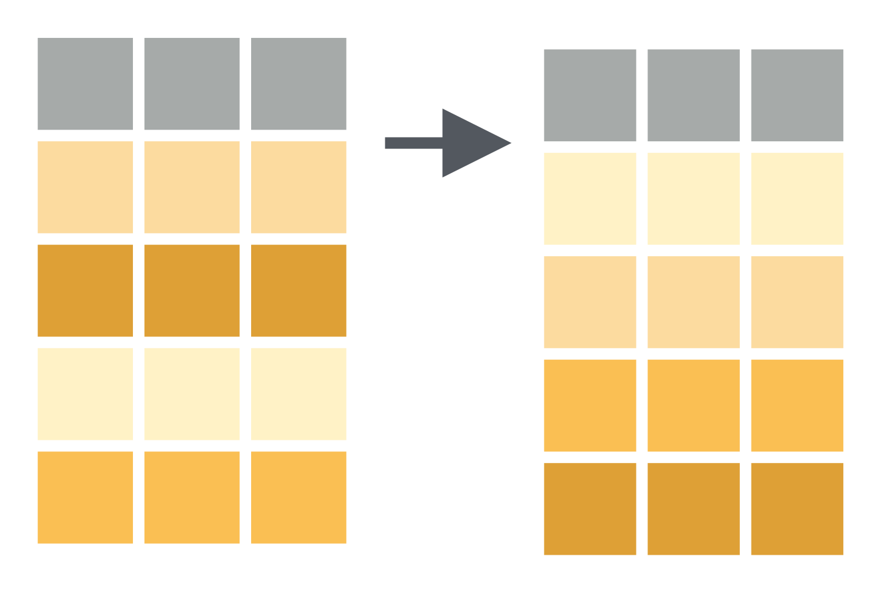
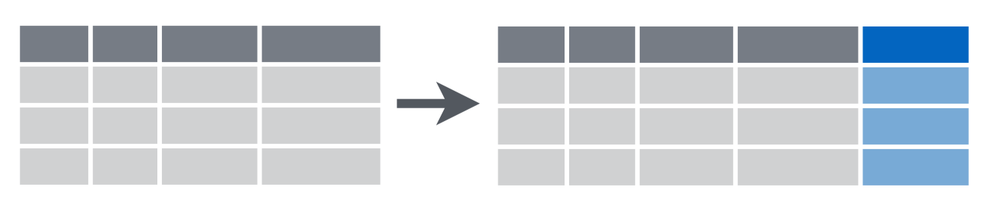
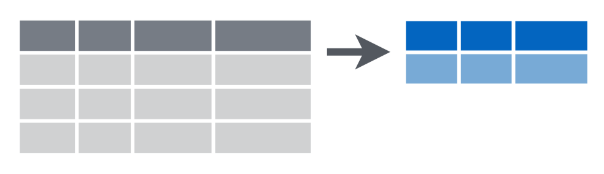
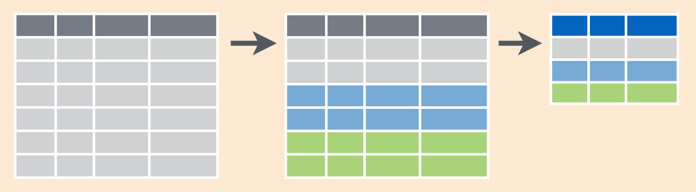

Session 3
August 1, 2018
Review
Packages
How do you install a package from the R prompt, like readxl?
Answer
How do you load a package from the R prompt, like dplyr
Answer
How can you use RStudio to load a package?
Answer
RStudio Packages Pane
Okay, but what is a package?
Answer
A package contains:
- Functions
- Documentation
- Vignettes
- Data
Data Types
What data type are each of the following?
| Type | Example |
|---|---|
1L |
|
3.14, 1.23e-4 |
|
"apple" |
|
TRUE, FALSE |
|
c(...) |
|
list(...) |
|
data.frame(...) |
|
data_frame(...) |
|
NA |
|
NULL |
|
factor(letters) |
Answer
integer, double, character, logical, vector, list, data.frame, tibble, N/A (missing), Null and factorRun the following command. It will create 3 variables: x, y, and z. Without printing the variables, how can you tell what data type they are?
Answer
Here’s the code that was run:
Workspaces & RStudio Projects
In the last session, we created an RStudio project and an example R script.
- Re-open the project we created (or create a new project).
- What is the current working directory?
- Use the File pane to navigate to your desktop (or another folder on your computer).
- How can you quickly navigate back to the working directory?
Open example_single_patient.R from our previous session and add the following lines.
example <- data_frame(
patient_id = patient_id,
age_dx = age_at_diagnosis,
age_visit = age_at_visit,
tumor_size = tumor_size,
site_code = site_code
)Clear your workspace (quick refresher here) and then source the script.
View the tibble that is stored in example.
# A tibble: 5 x 5
patient_id age_dx age_visit tumor_size site_code
<dbl> <dbl> <int> <dbl> <chr>
1 5554321 54 54 9.5 C220
2 5554321 54 55 9.5 C400
3 5554321 54 56 9.7 C412
4 5554321 54 57 9.9 C220
5 5554321 54 58 10.1 C400 Functions
Functions that work with vectors
So far we’ve primarily seen vectors that operate on single values or that take single-valued arguments.
But as we’ve seen, R is a vectorized language.
Try using the following functions on the variables we created in example_single_patient.R in Session 2.
age_at_visit <- 54:58
tumor_size <- c(9.5, 9.5, 9.7, 9.9, 10.1)
site_code <- c("C220", "C400", "C412", "C220", "C400")min(tumor_size)
max(tumor_size)
mean(tumor_size)
median(tumor_size)
var(tumor_size)
sd(tumor_size)
IQR(tumor_size)Those functions all come from base R (standard R library).
The following functions are given to us from dplyr. We have dplyr loaded if we’ve run library(tidyverse), but I’ll include the dplyr:: first as a reminder that that’s where these functions come from.
dplyr::first(site_code)
dplyr::last(age_at_visit)
dplyr::nth(site_code, 2)
dplyr::n_distinct(site_code)All of these functions return a single value. Try the following. What happens and why?
Because R is vectorized, operations are applied to the whole vector.
Dot, dot, dot
R has a somewhat unique addition for writing and using functions: the dot-dot-dot (...).
The ... is used in two ways:
To allow you to include an unknown number of values.
paste <- function (..., sep = " ", collapse = NULL)To allow you to pass arguments to an underlying function.
rep <- function (x, ...) .Primitive("rep")
Before We Begin
Before We Begin
Whenever you’re learning a new tool, for a long time you’re going to suck. It’s going to be very frustrating. But the good news is that that is typical, it’s something that happens to everyone, and it’s only temporary.
Unfortunately, there is no way to go from knowing nothing about a subject to knowing something about the subject … without going through a period of great frustration and much suckiness.
But remember, when you’re getting frustrated, that’s a good thing, it’s typical, it’s temporary. Keep pushing through and in time it will become second nature.
Hadley Wickham, UseR!2014
dplyr Basics
dplyr provides a wide range of functions for data manipulation and transformation. In this session, we’re going to cover 5 key dplyr functions:
| Function | Action |
|---|---|
filter() |
Pick out observations by their values |
arrange() |
Reorder the rows |
select() |
Pick out variables by their names |
mutate() |
Create new variables using existing variables |
summarize() |
Collapse many values into a single summary |
All dplyr verbs work similarly:
The first argument is a data frame.
Subsequent arguments describe how the verb will transform the data frame, using column names without
"column_name"The output is a new data frame.
filter()

filter(example, site_code == "C400")
filter(example, tumor_size > 9.5)
filter(example, age_visit < max(age_dx))Multiple arguments to filter() are combined with &:
filter(example, site_code == "C400", tumor_size > 9.5)
filter(example, site_code == "C400" & tumor_size > 9.5)To build more complex filter combinations, use
| Operation | Symbol |
|---|---|
| and | & |
| or | | |
| not | ! |
Filtering for an item in a group
Error in filter_impl(.data, quo): Evaluation error: operations are possible only for numeric, logical or complex types.Missing values
Filtering can be tricky when there are missing values – NA. Or sometimes, you’re trying to find the missing values.
It’s important to keep in mind that NAs are “contagious” in R, meaning that the result of almost any operation involving an NA will be an NA.
Here’s an example that helps to illustrate why NA == NA isn’t TRUE.
# Let x be Mary's age. We don't know how old she is.
x <- NA
# Let y be John's age. We don't know how old he is.
y <- NA
# Are John and Mary the same age?
x == y[1] NAfilter() keeps only the rows where the condition is TRUE and drops the rows where it is FALSE or NA.
arrange()

To arrange, or sort, the rows according to values in a given column, use arrange().
select()
select(example, age_dx, tumor_size)
select(example, age_dx:tumor_size)
select(example, -(patient_id:age_visit))Helper functions for select()
mutate()

mutate(example, follow_up = age_visit - age_dx)
mutate(example, elapsed = age_visit - min(age_visit))
mutate(example,
tumor_size = tumor_size * 10,
tumor_size_mm = tumor_size *100)Recoding or conditionally changing values
Often you’ll want to replace certain values of a variable with another value. There are several helpful functions provided by dplyr that let you do this, including:
recode(): Replace character values with"old" = "new".if_else(): Use logical statements to change the value.
summarize()

group_by() & summarize()

Combining dplyr Verbs
Let’s say we want to calculate the average age and tumor size (in cm) by site code for each patient.
To do this we’ll take our example data and
Group by
site_codeandpatient_idConvert tumor size from cm to mm
Summarize
tumor_sizeandage_dxby their average.
In dplyr speak:
ex1 <- group_by(example, site_code, patient_id)
ex2 <- mutate(ex1, tumor_size = tumor_size * 10)
ex3 <- summarize(ex2,
tumor_size_mean = mean(tumor_size),
age_mean = mean(age_dx))
ex3Notice that the output from each step is the input to the next step. Also, we don’t really need ex1 or ex2, we just want the output which we’ve saved as ex3.
To make this much cleaner we can use the pipe operator.
example %>%
group_by(site_code, patient_id) %>%
mutate(tumor_size = tumor_size * 10) %>%
summarize(
tumor_size_mean = mean(tumor_size),
age_mean = mean(age_dx)
)The pipe operator looks like this
%>%
You can type it with
Ctrl + Shift + M (Windows)
Cmd + Shift + M (Mac)
You say it like
Re-read the code above:
Take
exampleand then…Group by and then…
Mutate and then…
Summarize
The pipe operator is now ubiquitous in modern R code, but it’s not part of the R language.
Make sure that you load tidyverse or dplyr first!
Your turn!
Use the pipe operator and dplyr verbs to complete the following task:
Use the
exampledatasetFilter out tumors smaller than 9.7
Calculate
follow_uptime as the number of years between diagnosis and the patient’s visitRename the
site_codecolumn tocode.